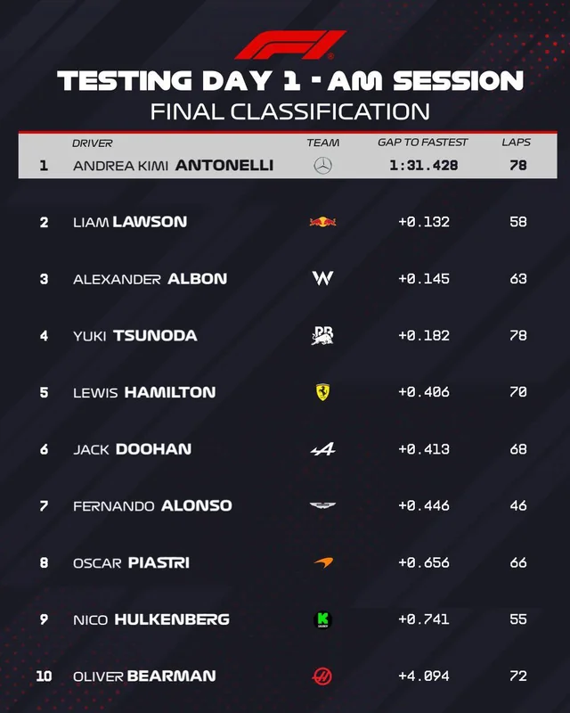

FORMULA 1 MSC CRUISES UNITED STATES GRAND PRIX 2025
SCHEDULE
PREVIOUS - SINGAPORE GRAND PRIX 03-05 OCTOBER 2024
NEXT - JAPANESE GRAND PRIX 18-20 OCTOBER 2024
FRIDAY 18 OCTOBER 2024
RESULTS
TEAMS ìÑÄ
- ALPINE
- MACLAREN
- FERRARI
- RED BULL


DRIVERS
- MAX VERSTAPPEN
- LEWIS HAMILTON


REFERENCES
NEWS
LATEST F1 NEWS
Wolff believes ‘underwhelming’ comments ‘lit a fire under the a***’ of Antonelli
After labelling Kimi Antonelli's Monza weekend as "underwhelming", Mercedes boss Toto Wolff has been impressed by the youngster's performances in Azerbaijan and Singapore.

Toto Wolff believes that his comments on Kimi Antonelli’s “underwhelming” weekend at Monza might have helped to motivate the youngster, with the Mercedes boss suggesting that it “lit a fire under the a***” of the rookie following two stronger outings in Baku and Singapore. After a decent start to his maiden campaign in Formula 1, Antonelli faced a tougher run of form during the European leg of the season, during which he recorded four retirements and just two points finishes towards the latter end of the top 10. This culminated in another difficult outing at the Italian Grand Prix in September, with Antonelli beaching his car in the gravel following a spin off track during FP2. After a P9 in Sunday’s race, Wolff labelled the 19-year-old’s performance at the Italian Grand Prix in September as “underwhelming”, adding: “You can't put the car in the gravel bed and then expect to be there.” However, Antonelli has gone on to enjoy better weekends since, having claimed P4 in the Azerbaijan Grand Prix before crossing the line fifth in Singapore, a track he has never previously raced at.

“All the other drivers had got used to these cars – it’s his first year, he doesn’t know the track, he doesn’t know all of this world. “So for next year everybody starts at zero with a car that you need to learn and, in that respect, I think he’s doing a good job, and it seems to have worked to [have] lit a little bit of fire under the a***, so we’ll see.” In terms of whether he is seeing qualities in Antonelli that hint at a future potential to win World Championships – and that put him at the level of the likes of team mate George Russell – Wolff added: “This is a very high level already; if you look at George and Max [Verstappen], the skills are so high, and there’s a few others that fall into that bracket. “I think actually making it into that group would be a success. The junior track record is phenomenal, the best probably that we’ve seen since 10 years – in go-karting [he was] exceptional – but Formula 1 is a different ball game.”
WATCH F1Ô∏è‚É£ MOVIE TRAILER HERE üèéÔ∏èüèÅüö•üèÜüí®
> SPECIAL MOMENTS

Singapore put on another spectacular show over the weekend, with Mercedes’ George Russell charging to a surprise pole position and victory, McLaren sealing successive Teams’ Championships, title rivals Lando Norris and Oscar Piastri clashing and much, much more... Behind the inspired Russell, a strong P2 finish for Max Verstappen and Red Bull continued their recent positive momentum, while Norris’ bold first-lap pass on team mate Piastri led to the Australian’s championship lead being cut once more.